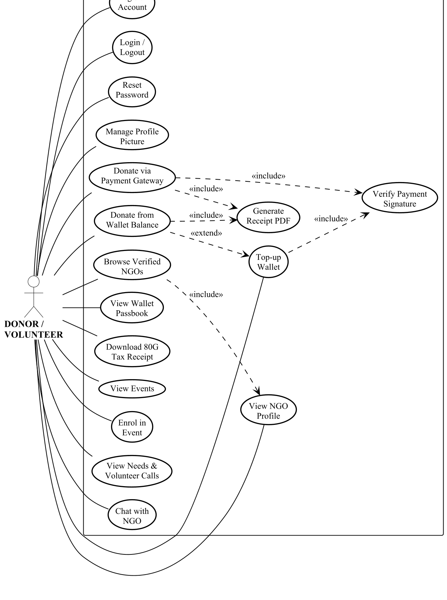
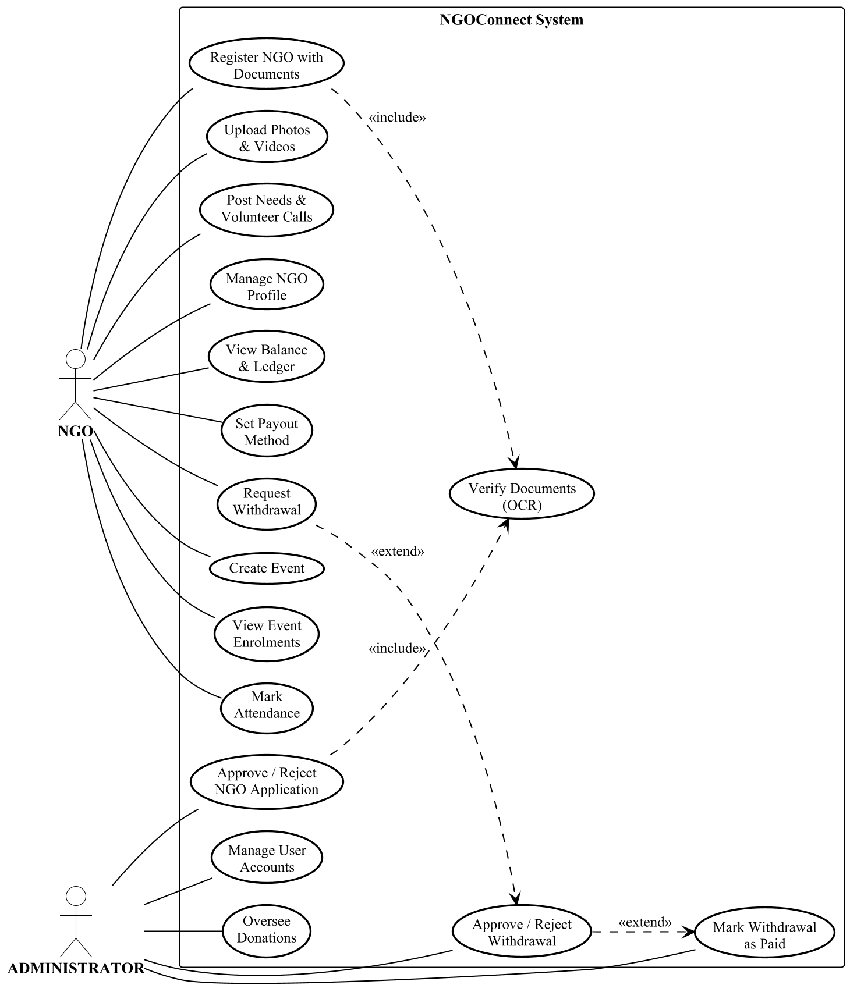
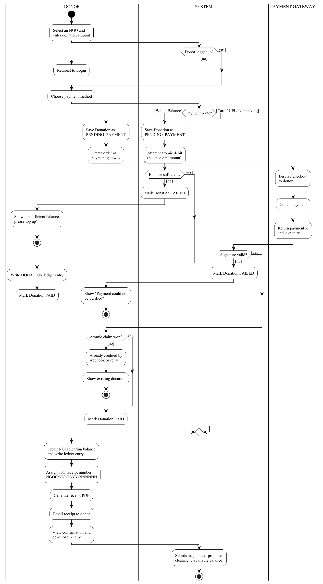
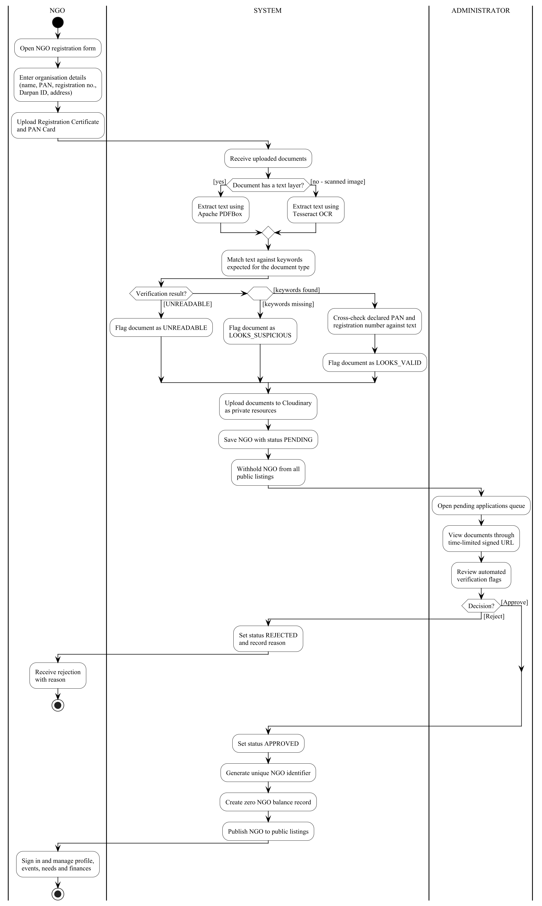
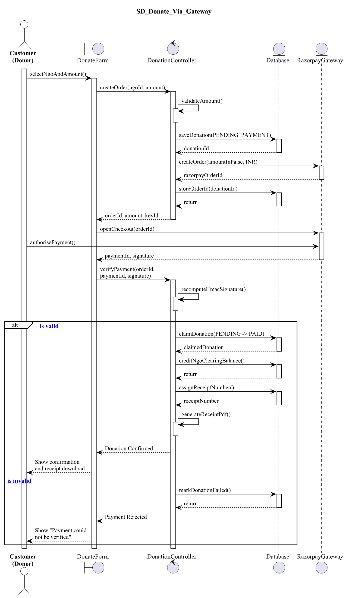
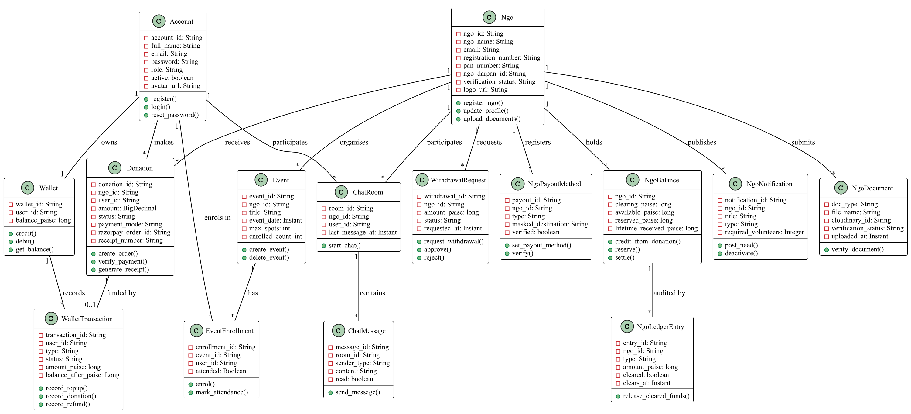

Rebuilt in PlantUML · standard UML notation
Six figures for Section 5, System Design.
These replace the earlier Mermaid versions entirely. They now use proper UML notation matching your reference images: stick-figure actors outside a system boundary, use cases as ellipses, <<include>> and <<extend>> dependencies, swimlane partitions, class boxes with three compartments, and sequence diagrams with activation bars and alt fragments.
Click “View full size” to inspect detail. Source .puml files sit beside each PNG in docs/uml/, so any diagram can be edited and re-rendered.
Everything a donor or volunteer can do. The dashed dependencies are genuine UML relationships: both donation routes <<include>> signature verification and receipt generation, because those always happen as part of donating; paying from wallet <<extend>> a top-up, because that only sometimes follows.

Two actors sharing one system boundary. The NGO handles its own onboarding, content, finance and events; the administrator holds the two approval powers the platform's trust model depends on — admitting organisations, and releasing money.

Three swimlanes — DONOR, SYSTEM and PAYMENT GATEWAY — so it is visible at a glance which participant performs each step. The two funding routes diverge at a decision node and converge again on crediting the NGO and issuing the receipt.

The trust workflow the whole platform rests on. Includes the branch between reading a PDF's text layer directly and falling back to OCR for scanned documents, the three verification outcomes, and the administrator's approval decision.

Uses the analysis stereotypes from your reference: an actor, a boundary (the screen), a control (the coordinating object) and entities (the database and gateway). Activation bars show when each object is active, dashed arrows are returns, and the alt fragment covers both signature-verification outcomes.

Sixteen classes in standard three-compartment notation — name, attributes prefixed - for private, operations prefixed + for public. Every association carries a name and multiplicities at both ends.
